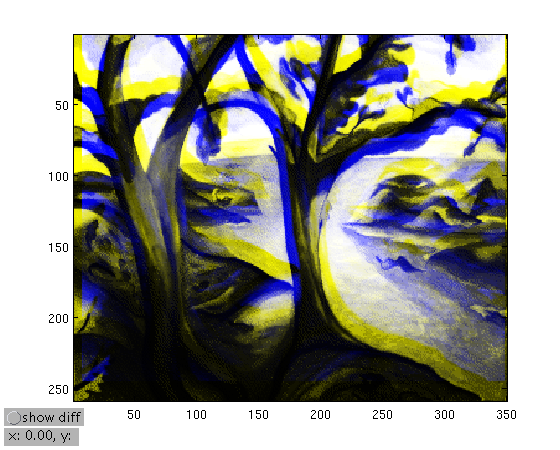

fn_alignimage
Display a superposition of gray-level images a and b, and allow to move image b.
Contents
Syntax
[shift =] fn_alignimage(a,b[,shift][,hf])
Example
Copy-paste from below or click here to test it.
load trees
xx = 1:350; yy = 1:258;
Y = interp2(xx,yy',X,xx-5.6,yy'+12);
fn_alignimage(X,Y)
 Source
Thomas Deneux
Copyright 2011-2012